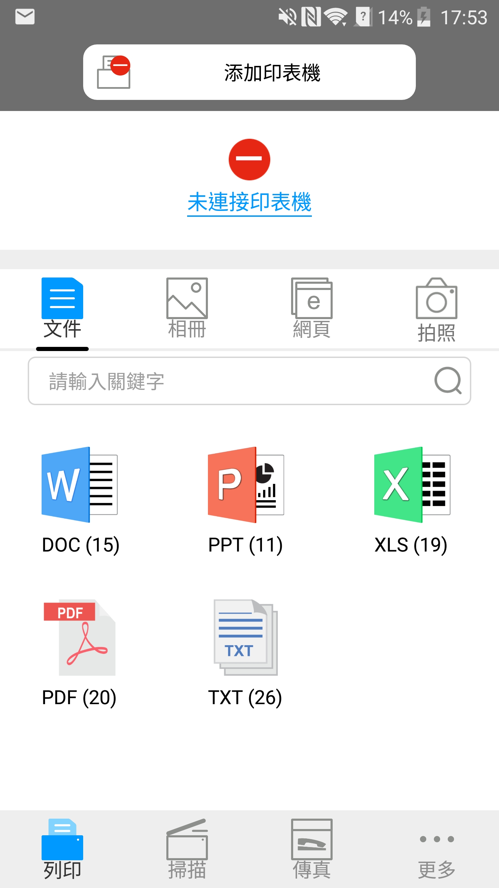

6. Pantum 行動列印
6.1. 什麽是Pantum行動列印？
Pantum行動列印是一款免費應用程式，它允許用戶從行動端直接列印照片，文件和網頁，Pantum移動列印適用於Android 4.0-8.0版本的移動作業系統，支援480*800dpi及3.5寸螢幕以上解析度。它將您的行動設備借由Wi-Fi連結到無線印表機。配置網路設備只需安裝Pantum行動列印應用程式，它就會自動偵測到適合的Pantum印表機，實現方便快捷的列印。
6.2. 下載Pantum行動列印
可在官方網站 www.pantum.com 下載行動列印應用程式。
6.3. 支援的行動操作系統
支援Android OS 4.4-8.0系統版本。
6.4.如何使用行動設備實現行動列印
6.4.1. 對於 Android 設備
6.4.1.1. 前期準備事項
1. 具有無線網路功能的印表機。
2. Android移動設備。
6.4.1.2. 操作步驟
1. 打開印表機電源。
2. 在Android移動設備，點擊主螢幕上的“PANTUM”圖示，彈出如下介面。

3. 點擊首介面上方的“添加印表機”按鈕，根據您的使用習慣選擇添加方式，完成印表機的添加。
4. 選擇您需要的功能，進行相應設置，使之滿足您的功能需要。
 |
附註： |
• 如如果列印失敗，請檢查Android移動設備是否已連接到印表機所在的無線網路。 • 如果Android移動設備未檢測到任何印表機，請檢查印表機是否已接通電源，以及印表機是否已打開。 • 如需瞭解更多，請參閱隨機附帶的移動列印使用指南。 |